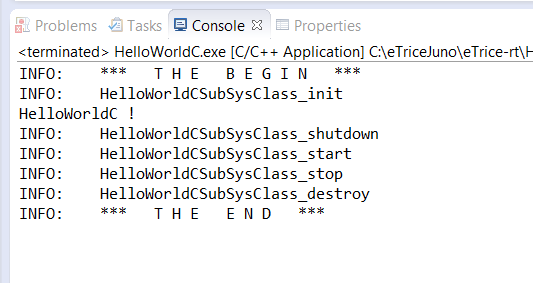

[next] [prev] [prev-tail] [tail] [up]
Now you can build the application. Click the build button to build the application. Run the application as Local C/C++ Application. Verify the output.

[next] [prev] [prev-tail] [front] [up]